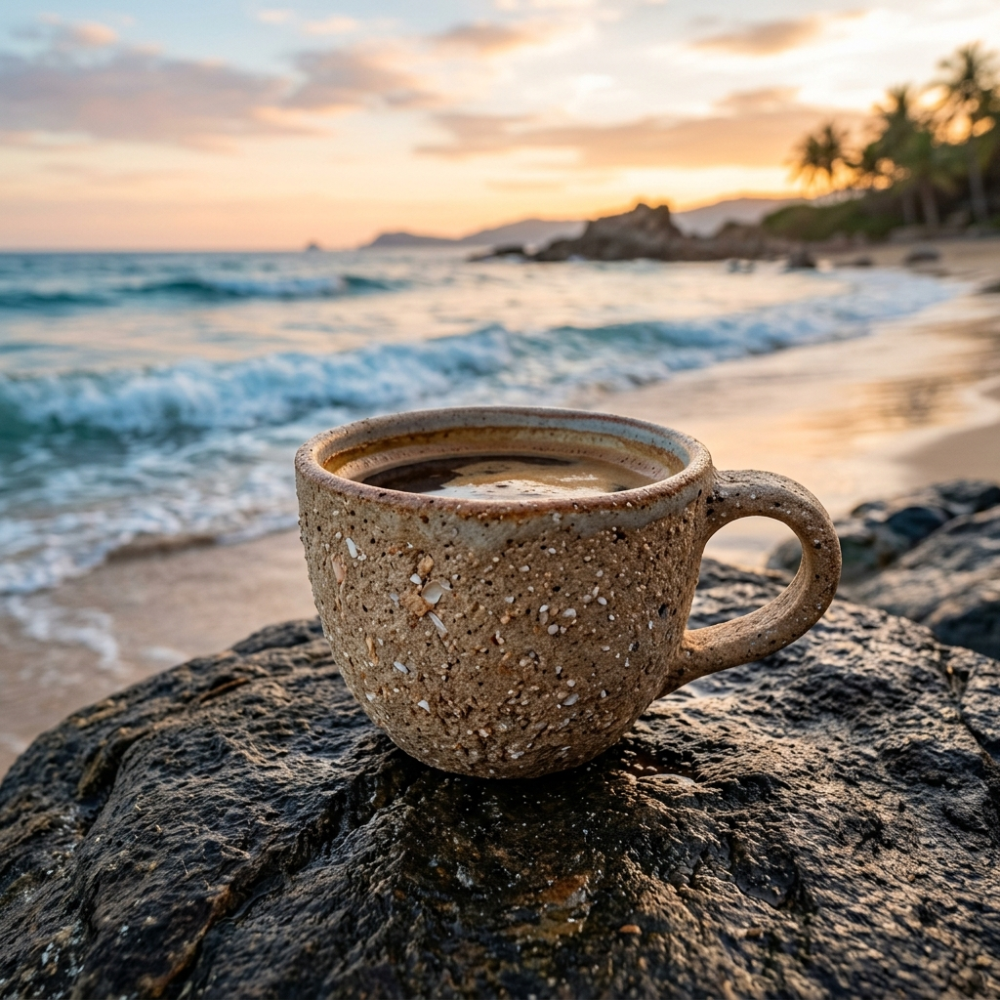

18.25° N, 109.51° E SANYA
黄金纬度 · 风味重塑
Specialty Coffee Laboratory
在北纬18°的温暖海风中，我们以对自然的敬畏，重塑海岛的味觉基因。让每一杯咖啡的温度，都连接起火山岩红土与椰林的耕作双手。

Specialty Coffee Laboratory
在北纬18°的温暖海风中，我们以对自然的敬畏，重塑海岛的味觉基因。让每一杯咖啡的温度，都连接起火山岩红土与椰林的耕作双手。
“地理的科学只能定义生长的边界，而唯有手心的温度，才能重塑风味的灵魂。”
海南三亚，位于北纬 18.25°N。这里拥有富含矿物质的火山岩红土土壤、充沛的阳光和湿润的太平洋海风，提供了咖啡豆生长所需的一切苛刻条件。18°D 咖啡 (18°Degree Coffee) 致力于探究这道地理线条背后的风味奥秘，并向世代耕作的当地咖啡农人致以最诚挚的谢意。
我们坚持“科学金杯萃取”与“人情侍奉”的融合。恒温 92°C 水流、1:15 的科学粉水比与慢速慢热的耐心萃取，只为提取出火山土壤特有的可可坚果后味。这不仅是一杯咖啡，更是一场关于自然风物与人文温度的感官共鸣。

放置在海岸玄武岩上的18°D可循环砂岩杯，杯体由海滩清理中回收的贝壳细砂与天然树脂复合制成。
“我们不单是在制作一杯流体，更是在拼凑一首关于泥土、海浪、手心温度的叙事诗。”
18°D 咖啡的起点，源自一次看似偶然的野外地质勘测。2024年秋，几位咖啡主理人与澄迈火山地质专家同行，站在富含矿物质的玄武岩红土上，手里握着当地咖啡农捧出的一把生豆。地质学者的一句话点醒了我们：这片土地沉淀了数万年的火山微量元素，海棠湾潮汐海风又源源不断地送来盐分与水分，这就是大自然的风味配方。
回到三亚后，我们创立了 18°D（18°Degree）。我们建立了一套属于海岸的“提取纪实”：只选用火山岩红土地带的单一源（Single Origin）咖啡，并与文昌东郊椰林签署有机椰乳直供协议。为了能让自然与邻里在这里和谐共处，我们不仅设计了无障碍的清水日落坡道，还引入了“无声咖啡师”点单系统。这是咖啡与社会的温情碰撞，更是我们对三亚这片山海的敬畏礼赞。
我们不用高不可攀的奢侈包装，而是将对自然的敬畏与对您的体贴，融入这四个温暖的小细节里。
我们在露台外静候海风。店内的轻柔 Lo-Fi 音乐节奏，会随着海浪的涨落声响自然起落。退潮时音量柔和安静，涨潮时旋律轻快。不需要繁杂的科学设备，只为让您喝咖啡时，耳边能与南海的呼吸同频。
我们用澄迈火山区纯净的玄武岩粗砂，来净化泡制咖啡的过滤水。火山砂岩自带丰富的矿物质，能天然软化水质，让冲出来的每一杯咖啡更加顺滑、不苦涩，带有一丝大自然的微甜。普通的水，因为这一道纯净慢滤，也有了火山的温度。
为了让您和我们的听障咖啡师沟通更方便、更暖心，我们做了一批代表风味偏好的小木牌（如“火山”、“海浪”、“微甜”）。您只需指一指或递给咖啡师对应的小木牌，就能轻松完成定制。一个简单的手势与微笑，就是我们之间最美的默契。
我们在海滩漫步时，会把海滩上的碎贝壳和粗沙收集起来，与竹纤维融合制成可以重复使用的‘沙滩粗砂杯’。杯子拿在手里有沙滩的粗粝质感。它百分之百来自自然，即使旧了丢弃，也能在海水里自然融为沙子。您可以带它去沙滩走走，让环保变成随手的习惯。
请输入您的桌号，选择您喜爱的饮品与轻食，我们的咖啡师将亲手为您奉上。